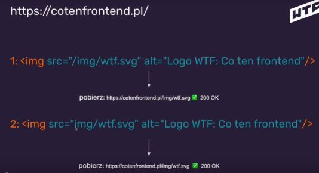

Jak działa internet i przeglądarka?
Protokół HTTP
Przeglądarka używa protokołu HTTP (Hypertext Transfer Protocol) -
zazwyczaj.
HTTP - protokół do transportowania htmla i całej reszty, którą
widzimy na stronach (Protokół, który obsługuje strony internetowe
i ich zawartość).
HTTPS - Secure, szyfrowany, bezpieczny, rekomendowany.
Przeglądarka sama dopisuje port po wykryciu czy jest to HTTP czy HTTPS. Mówi nam, na którym porcie na serwerze znajdują się pliki tej strony. Na którym porcie przeglądarka musi się dogadywać z serwerem, żeby ten transport miał sens.
Po kolei:
- Wpisuję w pasku adresu cotenfrontend.pl -> enter (URL - Uniform Resource Locator - adres, który wpisujemy)
- Przeglądarka szuka serwera co ten frontend.pl - DNS (DNS tłumaczy nazwy zrozumiałe dla nas na adresy IP (mówi nam gdzie jaki serwer się znajduje). Mówi nam na jakim serwerze znajduje się strona)
- Po znalezieniu serwera (jak się połączymy z serwerem) odpytuje go o index (szuka u siebie tego pliku) (jeśli podamy sam adres serwera) - to co jest indexem zależy od konfiguracji serwera (nie musi to być index.html, ale w przypadku stron statycznych najczęściej tak jest)
- Serwer wysyła do przeglądarki zawartość html
- przeglądarka wczytuje html i szuka wszystkich dodatkowych zasobów: style, skrypty, obrazki itp. i dla każdego z zasobów wykonuje zapytanie (Pobieranie zawartości HTMLa do przeglądarki, serwer odpowiada zawartością. Do każdego zasobu osobne zapytanie, serwer zwraca pliki)
- Przeglądarka parsuje (sprawdza składnię strony) i renderuje stronę (zamienia kod HTML na to co widzimy, aplikuje style i ładuje dodatkowe zasoby)
Komunikacja przeglądarka - serwer odbywa się na zasadach request - response.
Narzędzie deweloperskie -> Zakładka Network - możemy podejrzeć to co przeglądarka pobiera z serwera.
Odpowiedzi protokołu HTTP
Czasami serwer nie odpowiada i dostajemy błędy albo serwer może odpowiedzieć z błędem.Odpowiedzi serwera mają różne kody i pozwala nam to na diagnozowanie problemów.
Kody odpowiedzi protokołu HTTP:
- 100- HOLD ON
- 200- OK HERE YOU GO
- 30x- szukasz w złym miejscu, przekieruję Cię w dobre, wiem gdzie to np. adres do przekierowania na grupę na fb GO AWAY
- 404- nie mam tego czego potrzebujesz YOU FACKED UP
- 50x- nie czuję się najlepiej, błąd wewnętrzny serwera, we can do nothing I FUCKED UP
"/" Root
Root jest istotną częścią ścieżek do zasobów, dobrze wiedzieć jak działa. Mówi nam w którym miejscu przeglądarka powinna szukać zasobów.
Przeglądarka dokleja tego slasha z końca pl/…..
...przed img.
Ścieżka bezwzględna "/"

Ścieżka względna bez "/"
Brak "/"" z przodu drugiej ścieżki uczynił adres do zasobu relatywnym, dlatego przeglądarka szukała pliku w aktualnym katalogu - /podstrona/img/wtf.svg
Tworząc stronę uruchamianą “z dysku†pomijaj używanie slasha z przodu. Użyjemy "/"" jak będziemy używać serwera lokalnego.